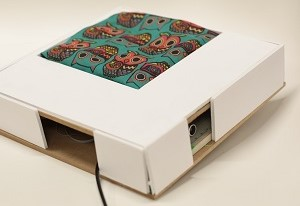

A theremin made out of brass plates, using their capacitive nature to detect change in voltage due to human touch.
Tools Used : Arduino
This project was inspired mainly by my curiosity surrounding capacitive touch. It takes into consideration the capacity of the human touch to cause a voltage change. While initially working on capacitive sensing, I came across theremin and worked on a smaller version before delving into the current model.

Below is a video of the initial prototype
← Back to Home